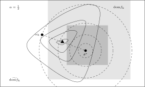

联邦学习中的临近算法#
基于减小数据非独立同分布情形下、每一轮的子节点更新对整体模型影响的考虑，[Li et al.[1]] 首先提出了在子节点上的局部模型中增加邻近项的联邦临近算法 FedProx，达到了算法收敛更快、更加稳定的目的。相较于 SCAFFOLD 算法，使用邻近项的方案不需要进行额外（关于梯度信息）参数的维护与传递，没有通信开销以及安全性上的额外代价（详见 [Zhu et al.[2]]）。
具体来说，在算法迭代的第 \((t+1)\) 轮，每个子节点优化的目标函数从 \(f_k(\theta_k)\) 变为了如下的带邻近项的函数
上式中的 \(\mu\) 被称作罚参数 (Penalty Constant)。值得注意的是，上式邻近项的中心为 \(\theta^{(t)}\)，即上一轮迭代得到的全局模型。实际上，联邦临近算法 FedProx 整体的优化问题可以建模为如下的约束优化问题
关于邻近项中心的其他选取，[Hanzely and Richtárik[3], Li et al.[4]] 进行了研究，我们随后进行详细介绍。我们将联邦临近算法 FedProx 的伪代码总结如下：
\begin{algorithm}
\caption{PseudoCode for \texttt{FedProx}}
\begin{algorithmic}
\REQUIRE penalty constant $\mu,$ constant $\gamma \in [0, 1]$
\STATE {Initiation:}
\STATE global model parameters $\theta^{(0)} \in \mathbb{R}^d$
\FOR{each round $t = 0, 1, \cdots, T-1$}
\STATE $\mathcal{S}^{(t)} \gets$ (random set of clients) $\subseteq [K]$
\STATE broadcast $\theta^{(t)}$ to clients $k \in \mathcal{S}^{(t)}$
\STATE \FOR{each client $k \in \mathcal{S}^{(t)}$ {in parallel}}
\STATE find a $\gamma$-inexact solution $\theta_k^{(t)}$ to $\underset{\theta_k}{\text{argmin}} h_k(\theta_k, \theta^{(t)}) := f_k(\theta_k) + \frac{\mu}{2} \lVert \theta_k - \theta^{(t)} \rVert^2$
\STATE \COMMENT{Definition of $\gamma$-inexactness: $\nabla h_k(\theta_k^*, \theta^{(t)}) \leqslant \gamma h_k(\theta_k, \theta^{(t)}),$ where $\theta_k^*$ is the exact solution to $h_k.$}
\STATE send $\theta_k^{(t)}$ to server
\STATE \ENDFOR
\STATE {Server Update:}
\STATE $\hspace{1.3em}$ $\theta^{(t+1)} \gets \frac{1}{\lvert \mathcal{S}^{(t)} \rvert} \sum\limits_{k\in \mathcal{S}^{(t)}} \theta_k^{(t)}$
\ENDFOR
\end{algorithmic}
\end{algorithm}我们把 \(\gamma\)-非精确解 \(\theta_k^{(t)}\) 记作
其中的 \(\prox_{f_k, \mu}\) 为临近算子 (Proximity Operator) [Moreau[5]]。令 \(s = \frac{1}{\mu}\)，因为 \(\prox_{f_k, \mu} = \prox_{sf_k, 1}\)，我们也把 \(\prox_{f_k, \mu}\) 记为 \(\prox_{sf_k}\)。相应的函数
被称作 \(f_k\) 的 Moreau 包络 (Moreau Envelope) 或者 Moreau-Yosida 正规化 (Moreau-Yosida Regularization)。函数 \(f_k\) 的 Moreau 包络与它的邻近算子有如下关系 [Parikh and Boyd[6]]：
也就是说，\(\prox_{sf_k}\) 可以视作是以 \(s\) 为步长进行的、极小化函数 \(\mathcal{M}_{sf_k}\) 的梯度下降算子。
关于联邦临近算法 FedProx 在非凸情况下的收敛性，[Li et al.[1]] 有如下的结论：
假设子节点的目标函数 \(\{f_k\}_{k=1}^K\) 都是非凸、\(L\)-光滑（定义见 (3)）函数，并且存在常数 \(L_- > 0\)，使得 \(\nabla^2 f_k \succcurlyeq -L_- I_d\)。又假设 \(\{f_k\}_{k=1}^K\) 满足差异有界条件 (Bounded Dissimilarity)，即对 \(\varepsilon > 0\)，存在常数 \(B_{\varepsilon} > 0\)，使得集合 \(\mathcal{S}_{\varepsilon}^c := \{ \theta ~|~ \lVert \nabla f(\theta) \rVert^2 > \varepsilon\}\) 中的任何一点 \(\theta\) 都满足不等式
选取常数 \(\mu, \gamma\) 满足
其中 \(\bar{\mu} = \mu - L_- > 0\)。那么在 FedProx 的第 \((t+1)\) 步，设前一步的全局模型参数 \(\theta^{(t)}\) 为全局目标函数 \(f\) 的一阶非稳定点（即 \(\theta^{(t)} \in \mathcal{S}_{\varepsilon}^c\)），那么 \(f\) 的值满足如下的下降关系
对于联邦临近算法 FedProx 收敛性定理，我们有如下的观察：在 \(\lVert \nabla f \rVert\) 的零点附近，如果这个零点没有被 \(\mathbb{E}_k[\lVert \nabla f_k \rVert]\) 消除掉，即这个点也是 \(\mathbb{E}_k[\lVert \nabla f_k \rVert]\) 的零点，且零点的阶数相同或更高，那么在这个点的邻域内，\(B_{\varepsilon}\) 会随着 \(\varepsilon \to 0\) 而急速趋向于无穷，导致在 \(\lVert \nabla f \rVert\) 的零点附近，\(\rho > 0\) 的假设不再成立，那么定理中的不等式 (8) 就变得无意义。
当子节点之间的数据分布完全一致的时候（理想情况下），\(B_{\varepsilon}\) 恒为 1，就不会有这个问题。这个问题也是后续一系列文章 [Pathak and Wainwright[7], Tran-Dinh et al.[8]] 进行改进的出发点。
联邦临近算法 FedProx 的积极意义在于，首次将临近点算法 (Proximal Point Algorithms, PPA) 引入联邦学习领域中，虽然临近点算法只是用做了（内循环问题的）子节点上的子问题的求解器，而 FedProx 算法整体严格意义上来看并不是临近点算法。临近点算法不仅仅在理论分析上可以提供一个好的框架，在算法设计上也能提供一个支撑。后续在个性化联邦学习方面的工作 [Hanzely and Richtárik[3], Acar et al.[9], Li et al.[4], Dinh et al.[10], Li et al.[11]] 都依赖于引入邻近项（或者类似的项）作为模型个性化的主要技术手段。

Schematic diagram for \(f_k(\alpha_k \omega_k + (1 - \alpha_k) \theta^*)\) in the APFL algorithm.
\begin{algorithm}
\caption{PseudoCode for \texttt{APFL}}
\begin{algorithmic}
\REQUIRE mixture weights $\alpha_1, \ldots, \alpha_K,$ synchronization gap $\tau$
\STATE {Initiation:}
\STATE $\hspace{1.3em}$ {Init server:} global model parameters $\theta^{(0)} \in \mathbb{R}^d,$ random set of clients $S^{(t)} \subseteq [K]$
\STATE $\hspace{1.3em}$ {Init clients:} local model parameters $\omega_k^{(0)} \in \mathbb{R}^d, ~ \theta_k^{(0)} \gets \theta^{(0)}, ~ \forall k \in [K]$
\STATE $\hspace{1.3em}$ {Constants:} condition number $\kappa \gets \frac{L}{\mu},$ $a \gets \max\{128\kappa, \tau\}$
\FOR{each round $t = 0, 1, \cdots, T-1$}
\FOR{each client $k \in \mathcal{S}^{(t)}$ {in parallel}}
\STATE $\bar{\omega}_k^{(t)} \gets \alpha_k \omega_k^{(t)} + (1-\alpha_k) \theta_k^{(t)}$ \COMMENT{mixture model}
\STATE $\eta^{(t)} \gets \frac{16}{\mu(t+a)}$ \COMMENT{decay learning rate}
\STATE $\theta_k^{(t+1)} \gets \theta_k^{(t)} - \eta^{(t)} \nabla f_k(\theta_k^{(t)})$ \COMMENT{inner problem (global model) update}
\STATE $\omega_k^{(t+1)} \gets \omega_k^{(t)} - \eta^{(t)} \nabla f_k(\bar{\omega}_k^{(t)})$ \COMMENT{outer problem (personalized model) update}
\COMMENT{Optional: adaptive mixture weights update}
\COMMENT{$\alpha_k \gets \alpha_k - \eta^{(t)} \nabla_{\alpha_k} f_k(\bar{\omega}_k^{(t)}) = \alpha_k - \eta^{(t)} \left\langle \omega_k^{(t)} - \theta_k^{(t)}, \nabla f_k(\bar{\omega}_k^{(t)}) \right\rangle$}
\ENDFOR
\IF{$t$ not divides synchronization gap $\tau$}
\STATE {Server updates:} $\mathcal{S}^{(t+1)} \gets \mathcal{S}^{(t)}$
\ELSE
\STATE each client $k \in \mathcal{S}^{(t)}$ sends $\theta_k^{(t+1)}$ to server
\STATE {Server updates:}
\STATE $\hspace{1.3em}$ $\theta^{(t+1)} \gets \frac{1}{\# \mathcal{S}^{(t)}} \sum_{k \in \mathcal{S}^{(t)}} \theta_k^{(t+1)}$
\STATE $\hspace{1.3em}$ $\mathcal{S}^{(t+1)} \gets$ (random set of clients) $\subseteq [K]$
\STATE $\hspace{1.3em}$ broadcast $\theta^{(t+1)}$ to clients $k \in S^{(t+1)}:$ $\theta_k^{(t+1)} \gets \theta^{(t+1)}$
\ENDIF
\ENDFOR
\STATE final personalized model: $\hat{\omega}_k \gets \frac{1}{S_T}\sum\limits_{t=1}^{T} p_t \left( \alpha_k \omega_k^{(t)} + (1-\alpha_k)\frac{1}{\#\mathcal{S}^{(t-1)}}\sum\limits_{k\in\mathcal{S}^{(t-1)}}\theta_k^{(t)} \right)$
\STATE final global model: $\hat{\theta} \gets \frac{1}{S_T}\sum\limits_{t=1}^{T} \frac{p_t}{\#\mathcal{S}^{(t-1)}} \sum\limits_{k\in\mathcal{S}^{(t-1)}}\theta_k^{(t)}$
\STATE where $p_t = (t+a)^2, S_T = \sum\limits_{t=1}^{T}p_t$
\end{algorithmic}
\end{algorithm}Client model parameter update schematic diagram of the FedDyn algorithm.
\begin{algorithm}
\caption{PseudoCode for \texttt{FedDyn}}
\begin{algorithmic}
\REQUIRE penalty coeffecient $\mu$
\STATE {\bfseries Initiation:}
\STATE $\hspace{1.3em}$ {\bfseries Init server:} global model parameters $\theta^{(0)} \in \mathbb{R}^d,$ $h = 0 \in \mathbb{R}^d$
\STATE $\hspace{1.3em}$ {\bfseries Init clients:} local gradient $\mathfrak{g}_k^{(0)} \gets 0 \in \mathbb{R}^d, ~ \forall k \in [K]$
\FOR{each round $t = 0, 1, \cdots, T-1$}
\STATE $\mathcal{S}^{(t)} \gets$ (random set of clients) $\subseteq [K]$
\STATE broadcast $\theta^{(t)}$ to clients $k \in \mathcal{S}^{(t)}$
\FOR{each client $k \in \mathcal{S}^{(t)}$ {\bfseries in parallel}}
\STATE $\theta_k^{(t+1)} \gets \underset{\theta_k}{\text{argmin}} \left\{ f_k(\theta_k) - \langle \mathfrak{g}_k^{(t)}, \theta_k \rangle + \frac{\mu}{2} \lVert \theta_k - \theta^{(t)} \rVert^2 \right\}$
\STATE $\mathfrak{g}_k^{(t+1)} \gets \mathfrak{g}_k^{(t)} - \mu (\theta_k^{(t+1)} - \theta^{(t)})$ \COMMENT{update local gradient}
\STATE send $\theta_k^{(t+1)}$ to server
\ENDFOR
\STATE {\bfseries Server Update:}
\STATE $\hspace{1.3em}$ $h^{(t+1)} \gets h^{(t)} - \frac{\mu}{K} \left(\sum\limits_{k \in \mathcal{S}^{(t)}} \theta_k^{(t+1)} - \theta^{(t)} \right)$
\STATE $\hspace{1.3em}$ $\theta^{(t+1)} \gets \left( \frac{1}{\# \mathcal{S}^{(t)}}\sum\limits_{k \in \mathcal{S}^{(t)}} \theta_k^{(t+1)} \right) - \frac{1}{\mu} h^{(t+1)}$
\ENDFOR
\end{algorithmic}
\end{algorithm}待补充……
参考文献